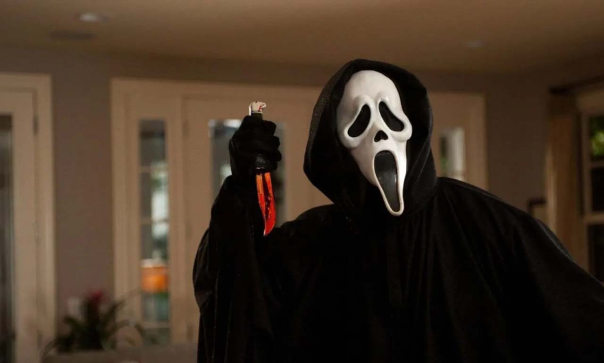

Uno de los personajes más queridos de 'Scream' volverá por sorpresa en su séptima parte después de su aparente muerte
Puedes apostar el culito a que Matthew Lillard va a aprovechar su momento álgido en Hollywood para volver a la saga que le vio nacer
20 de noviembre

Cuando, después de dos películas, Kevin Williamson tuvo que bajarse del guion de 'Scream 3' y le pasó la batuta a Ehren Kruger, este ignoró sus notas y empezó prácticamente de cero (y así salió la película, por otro lado). Entre dichas notas había una que habría vuelto toda la franquicia del revés: Stu, el personaje interpretado por Matthew Lillard en 'Scream', no solo estaba vivo, sino que, además, estaba coordinando todos los ataques de los nuevos Ghostface desde el hospital. Y durante años, el rumor de que Stu sobrevivió a los ataques en Woodsboro se ha ido haciendo más grande entre los fans... hasta ahora.
Matthew Lillard no solo es uno de los actores más queridos por los fans (hay cientos de historias sobre su amabilidad en Internet, llegando casi a un estatus de leyenda), sino que, además, está de moda tras su participación en 'Five Nights at Freddy's'. Y ha llegado su momento de volver a la franquicia que le vio nacer. Hasta ahora ha hecho papeles de relleno y borrosos en las películas de 'Scream', como simples guiños al espectador, pero en 'Scream 7', según hemos visto en su propio Instagram y ha confirmado Deadline, volverá de una manera u otra.
¡Me has dado con el teléfono!
No hay manera de saber, de momento, si lo hará como hermano gemelo, en un flashback, en una ensoñación o si, quién sabe, será el asesino en la sombra desde hace casi treinta años. Esto último, todo sea dicho, parece improbable y tendrían que dar una buena explicación: al fin y al cabo, la última vez que vimos a Stu tenía la cabeza metida en una televisión y varias cuchilladas por el cuerpo. De momento, el único dato que tenemos es Lillard escribiendo en un papel una de las frases más famosas de la primera parte (que, por cierto, improvisó): "Mamá y papá se enfadarán mucho conmigo".
Esta séptima parte se estrenará el 27 de febrero de 2026, y actualmente está en proceso de rodaje sin Melissa Barrera ni Jenna Ortega, pero con Neve Campbell y Courteney Cox volviendo a enfrentarse, una vez más, al enmascarado. Con el creador de la franquicia al frente, habrá que ver si han sabido darle el giro que a estas alturas -no nos engañemos- necesita. Mientras tanto, supongo que seguirán gustándonos las películas de terror.